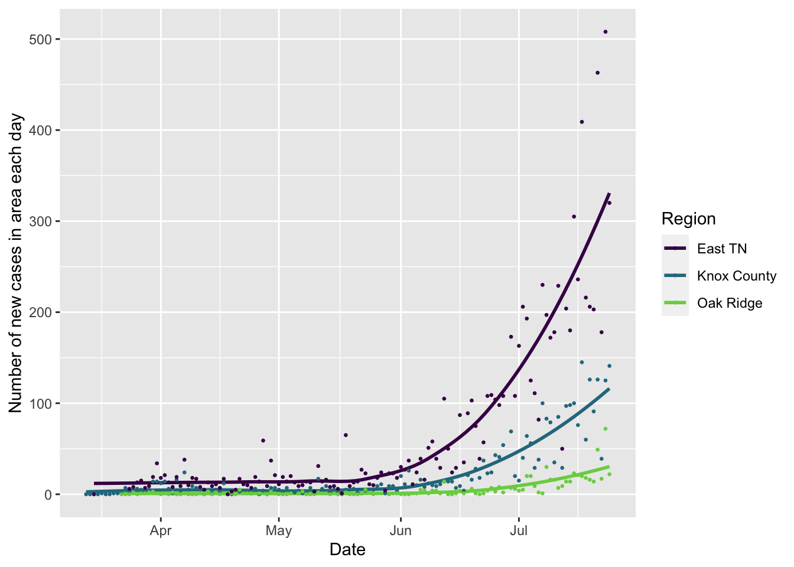
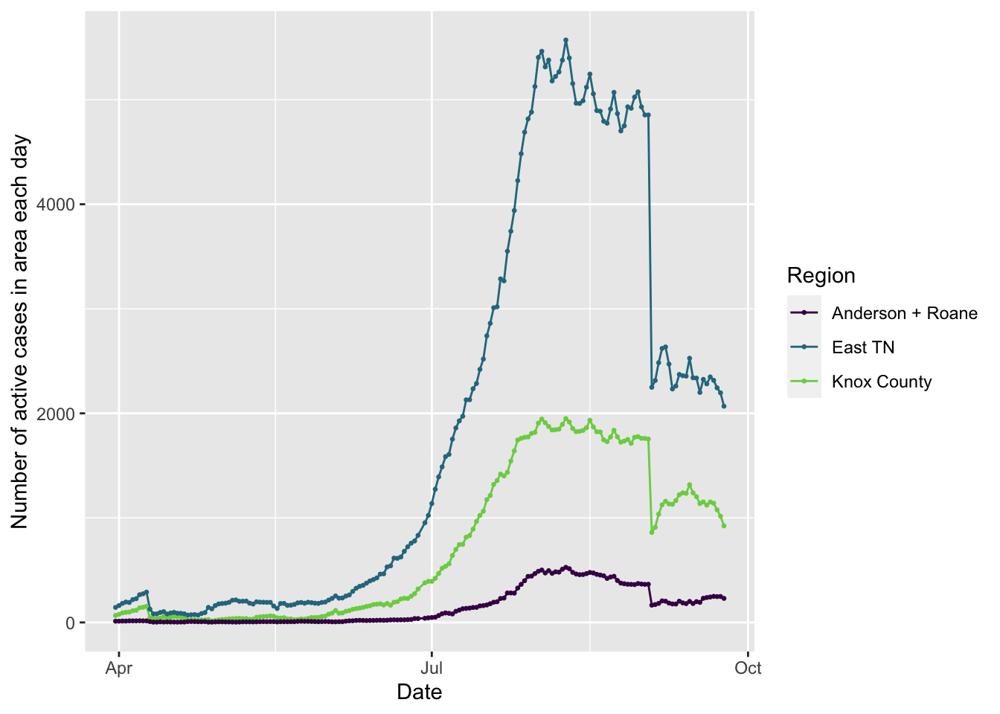
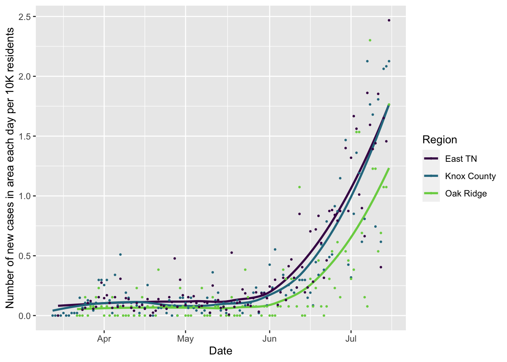
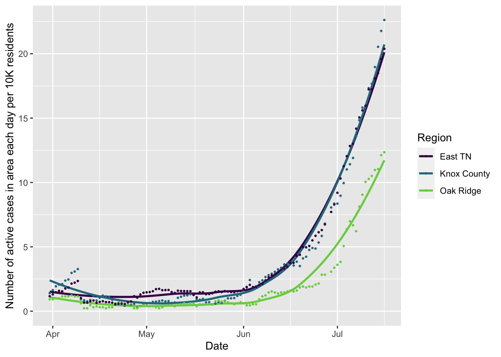
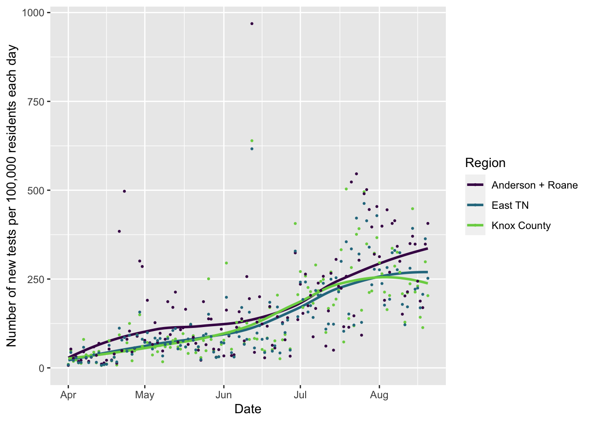
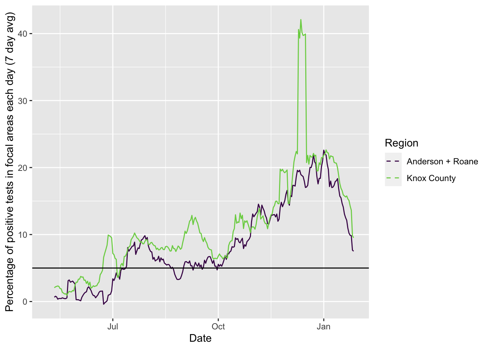
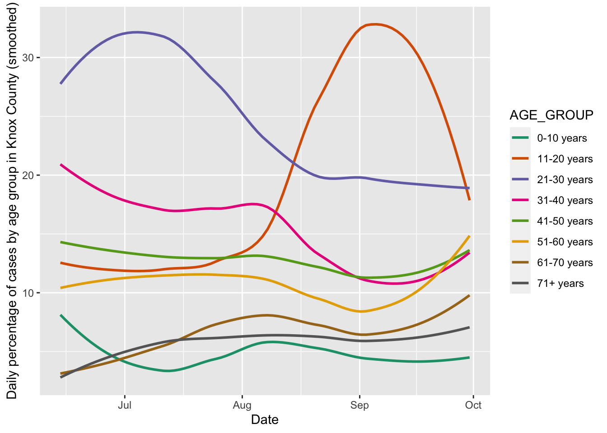
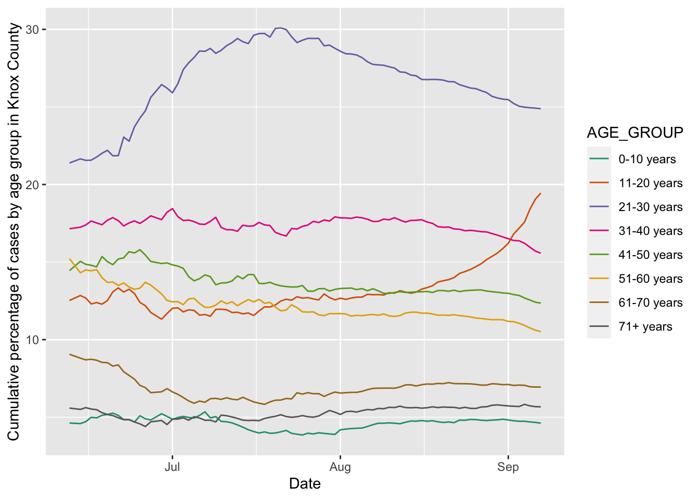
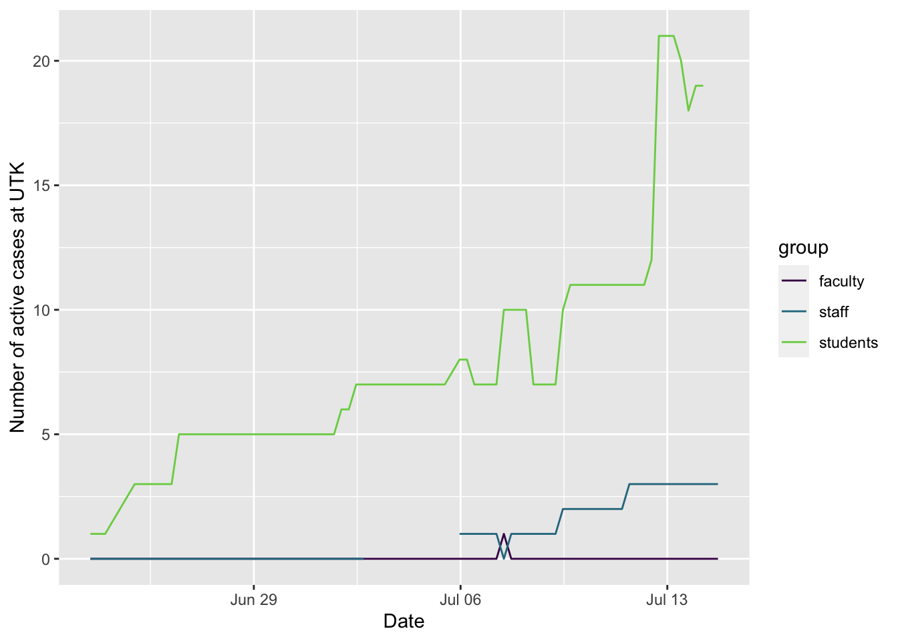
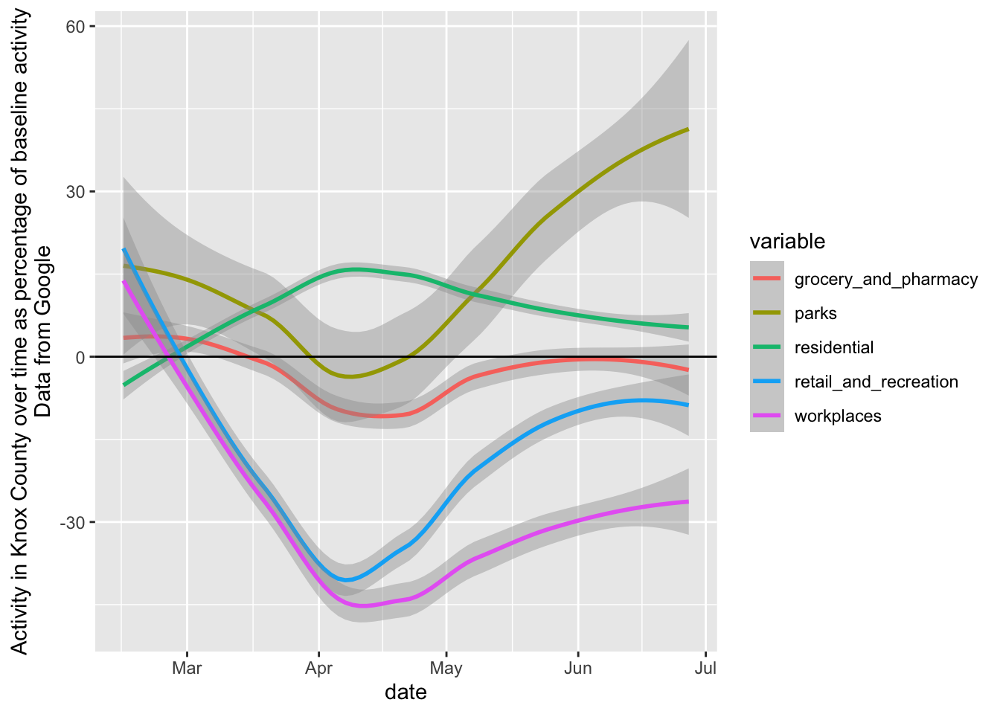

Local COVID data
Brian O’Meara
Here are notes and links I personally find useful, all gathered in one place. Mostly, I kept looking at webcams to see whether people are practicing social distancing and decided to put them all in one page. I also gather data when nervous, so I also have plots of things like testing, activity, and cases over time so I can see the info directly myself (for example, Knox County Health Department plots cases per day with a trendline, but so far their trendline is only a straight line - I was curious if a more flexible fitting might be more informative). I am not an epidemiologist, so please do not draw any advice from this page (and I’ve been careful NOT to do projections or anything like that – there is a lot that goes into modeling, see this video by my colleague Nina Fefferman, who unlike me is an expert in this, for more on models). This is just me poking around with the data to make myself feel better – the raw code is here if you’d like to examine it yourself.
- UTK coronavirus information. See especially the current task force report.
- Knox County data. This also includes info about Knox’s reopening plan and the benchmarks they’re using
- Inside of Knoxville has reporting out of every health board meeting and other local news.
- Knoxville News Sentinel is our remaining local paper (though some of its staff have been furloughed) and it covers covid in Knoxville and Knox County.
- Projections for Tennessee
- Covid ActNow aggregate of information, including contact tracing, infection rate, and more
- COVID-19 phylogeny. Family tree of the COVID-19 viruses around the world. This can be used by experts to understand how the disease has spread and is continuing to spread, as well as possible evolution during its spread.
- ProPublica’s tracker of state status. Click on the play button below their map to see how rates are changing over time, and dig into info on your state.
Here are some plots, created in R using data from https://covid19datahub.io (Guidotti, E., Ardia, D., (2020), “COVID-19 Data Hub”, Working paper, doi: 10.13140/RG.2.2.11649.81763), as well as information from Google and the state of Tennessee dataset page and plotting and analysis using the forecast, ggplot2, reshape2, and dplyr packages. It also uses the rds-r package from https://www.richdataservices.com/. Plots created on 2020-07-16 15:14:35. I use ggplot2’s geom_smooth() function for the smoothed regression plots with its default formula, which uses loess smoothing for this many points. This is not based on a model of disease spread or anything similarly sophisticated, just drawing a smooth curve to summarize noisy points (see here for more details).
The number of new and active cases should be not be going up if things are well-controlled, and ideally should be going down. The number of active cases is the number of positive cases minus the total of recovered or deceased cases: note it is from those tested and shown to be positive, but there are likely more people with covid who have not been tested. This uses data from https://www.tn.gov/health/cedep/ncov/data/downloadable-datasets.html. Note that the number of active cases in Knox County reported by the state differs from the county website, sometimes dramatically (on June 16, the county website said 102 active cases, while the state says 178, for example) – I suspect this is based on the number of recovered cases not being updated as quickly in the state data, but I do not know. Knox County does not seem to offer a download of their data through time, so I am using the state’s data. The number of new cases per day seems to align fairly well, but not perfectly, between the state and county data, too.
I plot three regions
- Knox County (which includes Knoxville)
- “Oak Ridge” (Roane and Anderson Counties, which include the town of Oak Ridge)
- East TN (the 14 counties that have acute care hospitals in Knox County/East Region according to Knox County)
For most of these plots, I am now showing the smoothed curves rather than the raw points per day – these can jump around quite a bit.

Here are the same plots, but normalized so it’s per 10,000 residents in each area per day (making it easier to see patterns in less populous areas):

This can be done for the region. Here are Knox County, Oak Ridge and its counties (Anderson and Roane), and all the East TN counties combined (the same ones used for regional hospital reporting for bed availability). This plots shows the daily number of tests per 10,000 residents.

Another way to look at testing (or disease spread) is to look at the proportion of positive tests (“positivity rate”): they can go up if a greater proportion of symptomatic people are being tested and/or if the frequency of the disease is increasing. Updated WHO guidelines recommend testing should be 5% positive or lower (black line).

Schooling
Many of the local schools are adopting a hybrid approach, where families can choose whether to send their kids to school or do online learning (sometimes with reduced options). The New York Times reports on July 14, 2020, that, “As education leaders decide whether to reopen classrooms in the fall amid a raging pandemic, many are looking to a standard generally agreed upon among epidemiologists: To control community spread of the coronavirus, the average daily infection rate among those who are tested should not exceed 5 percent.” Many districts nationally are not hitting that goal, but a question is whether local ones will. The first district to open in our area will be Oak Ridge public schools, who have a start date for students in person on July 29, 2020. Following the procedure of the NYT’s article, I am plotting the seven day average of positivity rate for tests for the counties including Oak Ridge (Roane and Anderson). The black line is the seven day rolling mean (total new confirmed / total new tests, not a mean of this ratio per day), the blue line is this smoothed, the dotted line is the 5% threshold, and the green rectangle is the first week of school

Hospitalization
As of the last time the data were updated (likely 1 days ago), regional hospitals had 24 ICU beds available of 272 total, and 134 available ventilators out of 242 total. This is based on 19 acute care hospitals in the East TN region; based on the 14 counties these hospitals are in, these serve at least 1,235,720 people. When a line hits 100%, the local hospitals are theoretically full for that resource (for all patients, not just covid patients), though there is surge capacity on top of this. Note that these data are not updated frequently, so current conditions maybe be much better or worse than these plots show. Data on capacity from https://knxhx.richdataservices.com/, data on hospitalizations and testing over time from the state data.

Trends in hospitalization of covid patients over time. The vertical dotted line shows the last day with updated capacity information, when there were 24 ICU beds available (ignoring surge capacity) for people in the East Tennessee region.

Which age groups are being infected is an important question as local schools open up. These are data from Knox county alone.

Another question is what is happening at UT as campus opens up and testing ramps up. There is some information on active cases available. Note that this is based on parsing a website without clean tables of data, and which sometimes drops labels for the data.

I’ve been curious about how active people have been – are they still going out, etc. The webcams at the bottom of the page are a glimpse of that, but Google has also been tracking activity data. Here are smoothed plots of activity over time, as a percentage of activity pre-COVID19 (the raw data are much more variable).

Local webcams
Downtown Gatlinburg webcam, a tourist town near us
Note that at night there are typically no lights here, so it will be a black screen. During the day you can see a parking lot in the mountains.